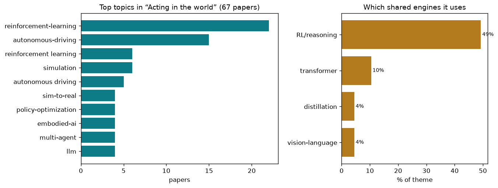

closing the loop — from seeing to deciding to moving
67 papers · closing the loop — from seeing to deciding to moving
Computer vision traditionally works in one direction: from pixels to meaning. Feed in an image, get out a classification, a label, a scene description. But the real world does not work that way. Seeing is only half the story. Once you understand what you are looking at, you have to decide what to do and then actually do it. This is the embodied vision problem: closing the loop between perception and action.
The challenge is not merely technical; it is structural. A classifier can be trained on static images, evaluated on a held-out test set, and shipped. But a robot or autonomous agent that acts in the world faces a fundamentally different constraint: it has to be right not just on average but reliably, across variations it has never seen, in environments where mistakes have real consequences. The very act of moving through the world generates new images, new states, new surprises. You cannot isolate the perception component from the control component; they are entangled. The robot's future observations depend on what it just did.
This creates three interlocking hard problems. First, visual representations for action must be learned differently than representations for classification. What matters for deciding whether to turn the steering wheel is not the same as what matters for identifying a cat. Second, robustness is not a luxury; it is mandatory. The agent must generalize across embodiments, camera angles, lighting, weather, domain shifts—because in the real world, the test set never matches training. Third, the loop has many layers. You must infer the state of the world from noisy sensors, predict how your actions will change that state (even slightly into the future), decide which action serves your goal, execute it, observe the result, and update your understanding. Each layer introduces error; errors compound.
The core tension is this: autonomy requires breaking the classical pipeline. You cannot have a perception module that hands off clean semantic labels to a decision module that hands off clean commands to a control module. Instead, the agent must learn to see and act as a unified process, where visual information shapes action selection in flight, and action outcomes reshape what the agent looks for next.
The most direct approach: train a single neural network to map images directly to actions, or to predict the next state or trajectory. The network learns representations optimized for the task at hand. ResAD frames autonomous driving as normalized residual trajectory prediction rather than raw waypoint regression, improving training stability and performance. Reliable Policy Transfer for Safety-Aware End-to-End Driving uses a unified reliability interface (an uncertainty signal) that gates both attention mechanisms and policy entropy during control. ActiveAD applies active learning specifically to end-to-end driving, selectively collecting hard examples that planning-oriented metrics identify as most informative. RoadSceneBench provides a lightweight mid-level understanding layer for driving scenes without excessive computation. The shared insight: end-to-end learning can work if the representation and training objective are shaped for the task, not just copied from classification.
Many embodied tasks—robot arm manipulation, whole-body locomotion, complex navigation—are naturally framed as sequential decision-making under uncertainty. Agents use visual inputs to observe state, take actions, receive rewards, and learn policies. Saliency-Guided Representation with Consistency Policy Learning decouples representation learning from policy learning, using saliency maps to focus attention on task-relevant visual regions that shift when actions are taken. Learning to Act Robustly with View-Invariant Latent Actions learns action embeddings that remain invariant to camera viewpoint, so the same policy works regardless of mounting angle. Learning to See and Act: Task-Aware Virtual View Exploration trains a PPO-based policy to actively select which virtual viewpoint to render, choosing views that are maximally informative for the task at hand. VIRAL: Visual Sim-to-Real at Scale for Humanoid Loco-Manipulation scales visual sim-to-real to 64 GPUs, arguing that large-scale compute is essential (not incidental) for learning robust whole-body policies in simulation that reliably transfer to physical robots. The central challenge these papers address: learning policies that are data-efficient and robust to visual variations that will inevitably appear at deployment time.
Robot learning rarely starts from scratch. Instead, practitioners want to reuse and recombine skills: adapt a policy from one task to another, or transfer it across different robot bodies. EnergyAction: Unimanual to Bimanual Composition with Energy-Based Models uses energy-based models to compositionally transfer one-armed manipulation policies to two-armed tasks, enforcing consistency constraints between the arms. RoboWheel: A Data Engine from Real-World Human Demonstrations for Cross-Embodiment extracts cross-embodiment generalizations from human demonstrations, allowing a policy learned on one robot morphology to guide learning on another. CUBic: Coordinated Unified Bimanual Perception and Control Framework unifies bimanual perception and control with role-aware decomposition, where each hand's actions are conditioned on the other's state. These approaches sidestep the data bottleneck by reusing learned patterns rather than starting over for each new configuration.
Robots and autonomous vehicles are expensive to operate continuously in the real world. Simulation offers cheap data and perfect ground truth. But simulation is not reality, and the gap is substantial. InternData-A1: Pioneering High-Fidelity Synthetic Data for Pre-training Generalist Policy curates large-scale high-fidelity synthetic datasets for pre-training general-purpose robot policies, bridging the sim-to-real gap. FedDAP: Domain-Aware Prototype Learning for Federated Learning under Domain Shift tackles domain drift in federated settings by learning domain-specific global prototypes that preserve both label semantics and domain-specific characteristics. Scaling-Aware Data Selection for End-to-End Autonomous Driving Systems models domain-specific scaling laws independently and actively selects data that optimizes multiple competing metrics for the specific deployment context. The philosophy: rather than try to make simulation perfectly realistic, instead pre-train on carefully selected and synthetic data that minimizes the shock of domain shift when the agent meets the real world.
Autonomous systems must know when they are likely to fail, and gracefully degrade when uncertainty is high. RiskProp: Collision-Anchored Self-Supervised Risk Propagation For Early Accident Anticipation learns to anticipate accidents by anchoring self-supervised learning to collision events, replacing hand-labeled anomaly annotations with real-world consequences. Neuro-Cognitive Reward Modeling for Human-Centered Autonomous Vehicle Control combines neuroscience data and cognitive models to define what a safe policy should achieve, grounding reward design in human behavior rather than pure engineering. AURA: Multi-modal Shared Autonomy for Urban Navigation uses human-robot shared control, allowing the human to guide the system when it encounters situations it cannot handle alone. Beyond Rule-Based Agents: Active Markov Games for Realistic Multi-Agent Interaction in Autonomous Driving reframes multi-agent driving as a game where state transitions and rewards depend on all agents' policies, not just actions—capturing the reflexive, co-evolutionary nature of realistic traffic. These papers reflect a crucial principle: perfect autonomy is impossible; instead, build systems that quantify risk, communicate uncertainty, and involve humans when needed.
Real-world tasks do not come pre-specified; they arrive as natural language instructions from humans. The agent must parse language, ground it in the visual scene, and decompose it into executable steps. Open-Ended Instruction Realization with LLM-Enabled Multi-Planner Scheduling in Autonomous Vehicles uses large language models to decompose abstract instructions into planner-specific sub-tasks, handling the gap between what humans say and what motion planners can execute. HiconAgent: History Context-aware Policy Optimization for GUI Agents learns GUI automation policies that track the history of user actions and screen states, inferring intent from context. TrafficAlign: Aligning Large Language Models for Traffic Scenario Generation aligns LLMs to generate realistic traffic scenarios with multi-agent interactions and physical constraints. SIR: Structured Image Representations for Explainable Robot Learning forces the vision-to-action model to decompose scenes into named objects and relationships, so humans can see which visual regions drove each decision. These systems treat language understanding as a bridge: the agent must translate natural English into visual-spatial reasoning and motor sequences.
Good visual policies are not passive; they actively choose where to look and anticipate what comes next. Align While Search: Belief-Guided Exploratory Inference for World-Grounded Embodied Agents uses exploratory inference to ground agents in the world, actively searching for visual evidence that resolves uncertainty. BridgeEQA: Virtual Embodied Agents for Real Bridge Inspections via Embodied Question Answering deploys embodied question-answering agents in custom 3D bridge environments, demonstrating that visual reasoning improves when agents can move to resolve ambiguity. ReLaX: Reasoning with Latent Exploration for Large Reasoning Models applies systematic latent space exploration to large reasoning models, allowing them to evaluate multiple hypothetical scenarios before committing to an action. The common thread: the agent does not just react to the current view; it queries the world by moving, and learns to anticipate future states for planning.
Resolving the Stability-Plasticity Dilemma in Reinforcement Learning via Complementary Continual Learning addresses a fundamental paradox: when an agent continuously learns from new experiences, it can overwrite old knowledge (plasticity problem) or become too rigid (stability problem). The paper combines rehearsal and selective parameter updates to maintain both capacities. LIBERO-Plus: A Progressive Robustness Benchmark for Visual-Language-Action Models benchmarks how well vision-language-action policies generalize across seven dimensions of robustness, revealing that models still lack smooth improvement as they encounter more data. DRAMA: Next-Gen Dynamic Orchestration for Resilient Multi-Agent Ecosystems in Flux adaptively orchestrates multi-agent vision systems to handle runtime volatility and failures gracefully. These papers reflect reality: embodied agents do not ship as static artifacts. They live in changing environments, encounter novel objects and scenarios, and must adapt without catastrophically forgetting.
The field has converged on several hard-won principles: end-to-end learning with task-specific representations outperforms classical modular pipelines. Simulation and synthetic data are essential for bootstrapping, but domain shift is a first-class problem requiring explicit handling. Robustness across embodiments and viewpoints is learnable but demands intentional representation design. Active perception—the agent choosing where to look—beats passive observation. And safety in embodied systems cannot be added afterward; it must be woven into the reward structure and training process from the beginning.
What remains open: scaling to the full messy complexity of the real world, where tasks are ambiguous, sensors are noisy, and the space of failures is infinite. Today's systems excel in constrained domains—highway driving, structured manipulation, simple navigation. They fail unpredictably in clutter and ambiguity. The next frontier is learning to act with the graceful uncertainty humans show: performing tasks reasonably well most of the time, knowing when to ask for help, and improving from experience without forgetting what worked before. The bridge between pixels and action is now passable; making it robust, general, and trustworthy remains the work ahead.
Each cluster connects a family of related papers from first principles, with an animated diagram and the papers grouped by approach.

Left: the theme's most common topics. Right: how much it leans on each shared engine.
| Paper | Code |
|---|---|
| A Unified Perspective on Adversarial Membership Manipulation in Vision Models | Sjtubrian/Adversarial_Membership_Manipulation |
| ActiveAD: Planning-Oriented Active Learning for End-to-End Autonomous Driving | Thinklab-SJTU/ActiveAD |
| Align While Search: Belief-Guided Exploratory Inference for World-Grounded Embodied Agents | LGAI-Research/AWS-agent |
| CREval: An Automated Interpretable Evaluation Metric for Creative Image Manipulation | ChonghuinanWang/CREval |
| Dynamic Important Example Mining for Reinforcement Finetuning | hrtan/DIEM |
| EnergyAction: Unimanual to Bimanual Composition with Energy-Based Models | codeshop715/EnergyAction |
| LEAD: Minimizing Learner–Expert Asymmetry in End-to-End Driving | kesai-labs/lead |
| Perception Characteristics Distance: Measuring Stability and Robustness of Perception Syst | datadrivenwheels/PCD |
| Predict Before You Explore: Predictive Planning with Specialized Memory for Embodied Quest | yuanrr/Pred-EQA |
| PvP: Data-Efficient Humanoid Robot Learning with Proprioceptive-Privileged Contrastive Rep | myismyname/SRL4Humanoid |
| ReLaX: Reasoning with Latent Exploration for Large Reasoning Models | ZhangShimin1/ReLaX |
| Reliable Policy Transfer for Safety-Aware End-to-End Driving with Deep Reinforcement Learn | szu-ai/safe-driving-drl |
| Resolving the Stability-Plasticity Dilemma in Reinforcement Learning via Complementary Con | sunbo5202/CD-CCA |
| RiskProp: Collision-Anchored Self-Supervised Risk Propagation For Early Accident Anticipat | xingyueye5/RiskProp |
| SEBA: Sample-Efficient Black-Box Attacks on Visual Reinforcement Learning | tairanhuang/seba |
| Saliency-Guided Representation with Consistency Policy Learning for Visual Unsupervised Re | bofusun/SRCP |
| TrafficAlign: Aligning Large Language Models for Traffic Scenario Generation | TrafficComposer/TrafficAlign |
| Training High-Level Schedulers with Execution-Feedback Reinforcement Learning for Long-Hor | hehehahi4/CES |
Adversarial attacks manipulate membership inference decisions by either faking members or hiding true members through gradient collapse.
Problem Membership inference attacks (MIAs) infer whether a sample was used in a model's training set, posing serious privacy risks. Conversely, adversarial membership manipulation attacks aim to corrupt MIA decisions — either forcing non-members to appear as members (Membership False Assertion, MFA) or concealing genuine members (Membership Falsification Detection, MFD). These dual attack surfaces lack a unified theoretical treatment, making principled defense and evaluation difficult.
Approach The paper formulates a unified adversarial membership manipulation framework covering both MFA and MFD directions. For MFA, adversarial examples of non-member samples are crafted using a momentum-based cosine-annealing confidence ascent strategy (MACA) that maximizes model confidence on the non-member, pushing it into the statistical region that MIAs classify as 'member.' For MFD, the method introduces gradient-norm collapse: genuine member samples are perturbed so that their gradient norms drop sharply, exploiting the fact that many MIAs use large gradient norms as a membership signal. The MACA attack iterates over perturbation steps with cosine-scheduled learning rates and momentum to avoid local optima. For AR-MIAs (adaptive ratio-based MIAs), the attack introduces a tanh-weighted statistic that further adjusts the likelihood ratio. Experiments are conducted under L∞ perturbation budgets (ε=2/255 to 8/255) across image classifiers trained on CIFAR-10/100, SVHN, CINIC-10, and ImageNet-100.
Contribution The first unified perspective that simultaneously formulates and evaluates both membership false assertion (MFA) and membership falsification detection (MFD) attacks against vision model MIAs, revealing gradient-norm collapse as the mechanism exploited by MFD.
Navigate cities with voice and gesture commands while robots assist, letting humans and machines jointly steer without collision.
Problem Autonomous navigation requires seamless human-robot collaboration where both human and robot contribute to navigation decisions. Limited methods for effective multi-modal shared control in urban environments.
Approach Framework combines multi-modal human input (voice commands, gesture control) with autonomous navigation capabilities. Uses intention recognition from multi-modal signals to infer human preferences. Blends human and robot control commands with negotiation mechanism to balance safety and user intent.
Contribution Multi-modal shared autonomy system for urban navigation with human-robot collaborative control.
Reduces annotation cost in autonomous driving by selecting samples based on trajectory uncertainty.
Problem End-to-end autonomous driving systems require substantial labeled data including 3D bounding boxes and semantic segmentation, which are expensive to annotate. Data in AD exhibits long-tailed distribution where most collected data is trivial (straight driving) while only a minority of instances are safety-critical, creating significant annotation inefficiency.
Approach ActiveAD formulates active learning for end-to-end AD with three key components. First, Ego-Diversity metrics address the cold-start problem by leveraging free metadata (weather, lighting, vehicle speed, driving commands) to create a stratified initial set, dividing the dataset hierarchically by weather-lighting conditions and driving scenarios with a parameter gamma controlling focus on minority classes. Second, three planning-oriented uncertainty metrics identify valuable samples: Displacement Error (L2 distance between predicted trajectory and recorded ego trajectory), Soft Collision (continuous version using exponential distance to nearest agent trajectory), and Agent Uncertainty (weighted entropy of multi-mode agent trajectory predictions). Third, an incremental selection pipeline combines these metrics via weighted loss (L = LDE + αLSC + βLAU) and iteratively selects top-k unannotated clips. The method is tested on nuScenes (1,000 20-second scenes) and CARLA simulator using VAD-Tiny as base model.
Contribution First active learning approach specifically designed for end-to-end autonomous driving that leverages planning-oriented metrics and multi-modal data characteristics to achieve comparable performance to SOTA methods using only 30% of training data.
Select which angles to view a scene from so robots can find and grasp occluded objects reliably.
Problem Grasping in cluttered environments is challenging; previous active vision methods either overlook grasp distribution importance or rely on projections ignoring SE(3) manifold structure, biasing toward scene completion rather than graspability.
Approach Proposes calibrated energy-based model (EBM) for grasp pose generation capturing multi-modality of grasps on SE(3) manifold. Calibrates energy level to success rate. Estimates information gain as entropy reduction of grasp distribution using GAP approximation. Selects next best view by maximizing entropy reduction on calibrated distribution.
Contribution Three-part principled information gain estimation: uses grasp distribution (not visibility), formulates on SE(3) manifold (not 2D/3D projection), calibrates to real distribution via success rate mapping.
Hierarchical belief-state reasoning with information-gain action selection enables efficient exploration for embodied agents without training-time search.
Problem Embodied agents navigating partially observable environments (POMDP) must explore efficiently to resolve uncertainty. Existing agents act greedily or rely on costly training-time search (MCTS, MPO). A training-free approach to principled exploration via information gain is needed.
Approach {'overview': 'Hierarchical belief over (global hypotheses, symbolic action distribution). Action selection via LLM-simulated information gain. Two-stage belief update after each observation.', 'belief_state': {'global': 'Natural language hypotheses H_1, ..., H_K about the current world state (e.g., object locations, task progress).', 'symbolic': 'Categorical distribution S over symbolic CHECK actions (look in drawer, open cabinet, etc.).'}, 'bamdp': 'Augmented MDP where the state includes the belief state b_t = (G_t, S_t). The agent receives reward for task completion and an information gain bonus for belief-resolving actions.', 'action_selection': 'For candidate action a, simulate possible observations o via LLM. Compute IG(a) = E_o[H(b_t) - H(b_{t+1}|a,o)]. Select the action with maximum IG.', 'belief_update': {'stage1': 'LLM updates global hypotheses G_t given the new observation o: posterior re-weighting of hypothesis plausibility.', 'stage2': 'Project updated G_t onto the categorical symbolic belief S_{t+1} via cosine similarity between hypothesis embeddings and CHECK action embeddings (or via LLM in complex cases).'}, 'training_free': 'No training-time tree search or reward modeling; all computation done at inference time using frozen LLM.'}
Problem Collaborative perception in autonomous vehicles is vulnerable to adversarial attacks on feature maps shared between vehicles. Existing defenses assume trusted ego vehicles or require additional classifiers, which is unrealistic in fully untrusted environments where all vehicles may be compromised.
Approach Proposes Pseudo-Random Bayesian Inference (PRBI) framework that detects adversarial behavior using temporal perceptual discrepancies from prior frames as reference. Uses pseudo-random grouping requiring only two verifications per frame with Bayesian inference to estimate malicious vehicle numbers and identities.
Contribution First efficient defense for fully untrusted collaborative perception using inter-frame temporal consistency as self-referential signal without assuming any trusted vehicle.
Train self-driving cars by simulating other vehicles that adapt and respond strategically like real human drivers.
Problem Autonomous driving research relies on large-scale datasets or simulation with rule-based agents, but these approaches suffer from limited behavioral diversity and fail to cover complex edge-case interactions. Rule-based opponent agents follow predefined routes and cannot dynamically respond to the ego vehicle, weakening strategic coupling and failing to reproduce realistic multi-agent interactive behaviors seen among human drivers.
Approach The framework models the driving environment as an Active Markov Game (AMG), which extends standard Markov games by making state transitions and reward functions explicitly dependent on the joint policy profile of all agents at each timestep, not just joint actions. The ego vehicle's observation combines front-view camera images (processed by a VAE encoder and Vision Transformer), radar data (multi-stage pipeline with ego-motion compensation, MAD-based thresholding, clustering, and multi-frame confirmation), high-precision maps, and vehicle state; these are fused and processed by a Transformer module that infers the opponent's policy, outputting actions sampled from a Gaussian distribution. Rewards use magnetic potential field shaping: attractive potentials toward the lane centerline (penalizing lateral deviation and heading error) and repulsive potentials from other agents (based on distance and time-to-collision). A multi-agent co-evolutionary training mechanism maintains a policy pool for each agent, where each pool stores strategies of varying intelligence levels learned in previous phases. At each training episode, the opponent samples a mixed strategy from its pool; once the ego agent's policy converges, it is added to the pool. Training uses PPO in continuous control settings. The approach is evaluated in CARLA on Town10HD and Town02 maps with traffic-signal-free intersections, T-junctions, and long-tail scenarios.
Contribution The Active Markov Game formulation makes state transitions and rewards policy-dependent (not just action-dependent), enabling a co-evolutionary training mechanism where diverse opponent strategy pools drive the ego agent toward a Nash equilibrium.
Problem Bridge inspection requires detailed visual assessment of large structures. Manual inspection is time-consuming and dangerous. Automating inspection with embodied AI agents that can navigate structures and answer questions about their condition is challenging.
Approach Train embodied agent in 3D bridge simulator to navigate and answer structural condition questions. Agent uses visual inputs, proprioceptive state, and natural language questions. Training combines reinforcement learning for navigation with supervised learning for QA. Navigation component learns to explore relevant areas; QA component answers about structural features. Evaluate on virtual bridge scenarios transferable to real inspection contexts.
Contribution Application of embodied QA agents to infrastructure inspection domain with custom 3D bridge environments.
Interpretable metric decomposes creative image manipulation into content preservation, locality, semantic coherence, and quality components.
Problem Evaluating creative image manipulation results is challenging because existing metrics (LPIPS, FID) don't capture whether edits are semantically meaningful, creative, and appropriate to user intent. Current metrics lack interpretability and align poorly with human judgments.
Approach Proposes CREval, an automated interpretable evaluation metric for creative image manipulation. Decomposes evaluation into interpretable components: (1) content preservation, (2) edit locality and precision, (3) semantic coherence, (4) creative quality. Each component uses explainable sub-metrics with human-aligned weighting.
Contribution First automated, interpretable, human-aligned evaluation metric specifically designed for creative image manipulation.
Control two robot arms together by learning which arm leads and which supports, and updating them in lockstep.
Problem Bimanual manipulation requires coordinated control of two arms with different roles (e.g., reaching vs. stabilizing). Existing approaches lack unified frameworks for coordinating perception and control of both hands in dynamic manipulation tasks.
Approach Proposes CUBic framework for unified bimanual perception and control. Models bimanual manipulation with dual attention streams capturing both hand's roles. Uses coordinated action prediction where each arm's actions are conditioned on the other's state. Implements hierarchical control with role-aware decomposition.
Contribution First unified framework for coordinated bimanual perception and control with role-aware decomposition.
Train robot hands in simulation then transfer to reality by grounding motion predictions in touch sensor feedback.
Problem The sim-to-real gap persists for contact-rich manipulation tasks where complex dynamic interactions and discontinuous contact behaviors are difficult to model. Explicit system identification and domain randomization are insufficient for capturing contact dynamics in dexterous manipulation.
Approach Proposes an implicit sim-to-real alignment framework that learns a contact-aware neural dynamics model. First trains base model on large-scale simulation data with rendered contact information. Then fine-tunes with real-world interaction data including tactile sensor readings using co-training to align simulated and real-world states in shared representation based on contact events.
Contribution First framework to leverage contact information from both simulation and real-world for implicit sim-to-real alignment without explicit parameter tuning, using tactile feedback to ground learning.
DRAMA coordinates multi-agent vision systems through dynamic task redistribution and fault-tolerance mechanisms.
Problem Multi-agent vision systems require dynamic coordination mechanisms to handle resource constraints, network failures, and changing task demands while maintaining overall system resilience.
Approach Proposes distributed orchestration framework with dynamic agent allocation, task redistribution, and fault tolerance mechanisms for multi-agent visual perception systems.
Contribution Adaptive orchestration for resilient multi-agent vision systems.
Protect AI model ownership by scrambling weights so that combining stolen models produces garbage output.
Problem Unauthorized model merging of publicly available fine-tuned models violates intellectual property rights and undermines model ownership accountability.
Approach Proposes MergeGuard dual-stage preprocessing framework. Stage 1: redistributes task-relevant information across layers via L2-regularized optimization ensuring even gradient dispersal. Stage 2: injects structured perturbations misaligning task subspaces breaking curvature compatibility.
Contribution Proactive defense framework disrupting merging compatibility through weight redistribution and structural perturbations.
Predict vehicle motion better by training on rare high-density scenarios where many cars interact closely.
Problem Trajectory prediction datasets exhibit strong long-tail distribution in scenario density where low-density cases dominate and safety-critical high-density interaction cases are severely underrepresented, causing model robustness degradation masked by aggregate metrics.
Approach Den-TP partitions data into density-conditioned regions using agent count as a dataset-agnostic interaction complexity proxy. Applies gradient-based submodular selection within each region while using biased sampling to upweight rare high-density scenarios. Introduces density-conditioned evaluation protocols revealing long-tail failure modes overlooked by conventional aggregate metrics.
Contribution First systematic analysis of scenario density imbalance in trajectory prediction datasets with density-aware curation and evaluation framework.
Contact-based reasoning predicts finger placement on objects, then generates dexterous hand configurations from language instructions.
Problem Language-driven dexterous grasp generation for multi-fingered robotic hands requires understanding task semantics, 3D geometry, and complex hand-object interactions. Existing approaches directly map observations to grasp parameters without modeling intermediate physical interactions, limiting grasp quality and intention alignment.
Approach Proposes DextER framework with contact-based embodied reasoning. Model autoregressively generates embodied contact tokens specifying which finger links contact which object surface positions, followed by grasp tokens encoding complete hand configuration. Unifies pipeline within next-token prediction framework with interpretable intermediate contact reasoning.
Contribution First contact-centric embodied reasoning approach for language-driven dexterous grasping; uses contact positions as embodiment-aware intermediate representation bridging task semantics with physical constraints; enables steerable generation via partial contact specification.
World model learns conservation laws through physics-aware exploration, enabling prediction of unseen physical properties.
Problem Learned world models excel at interpolative generalization but fail at extrapolative generalization to novel physical properties because they learn statistical correlations rather than underlying generative rules like physical invariances and conservation laws.
Approach Introduces DreamSAC with two core components: symmetry exploration using Hamiltonian-based curiosity to actively probe physical laws and collect physically informative data, and a Hamiltonian-based world model trained with contrastive learning to identify invariant physical state from pixel observations.
Contribution First framework combining Hamiltonian-based world models with active symmetry-aware exploration, where curiosity is driven by understanding of conservation laws enabling extrapolative physical generalization.
Benchmark autonomous systems on reasoning over multiple combined traffic rules in driving scenarios.
Problem Existing autonomous driving benchmarks lack evaluation of compositional reasoning over traffic rules, limiting assessment of systematic generalization.
Approach Introduces DriveCombo benchmark with compositional traffic rule scenarios; evaluates models on novel rule combinations not seen during training.
Contribution First benchmark systematically evaluating compositional traffic rule reasoning in autonomous driving contexts.
Compress multiple camera feeds into ultra-efficient tokens so autonomous driving systems can plan routes in real-time on a single GPU.
Problem End-to-end autonomous driving backbones based on Vision Transformers output thousands of tokens per frame that create computational bottlenecks when processing multiple trajectories, limiting real-time performance.
Approach Introduces DrivoR, a ViT-based E2E planning architecture using camera-aware register tokens that compress multi-camera features into compact scene representation. Two transformer decoders generate and score trajectory proposals, enabling behavior-conditioned driving.
Contribution Repurposing ViT register tokens for learned token compression in E2E driving, replacing uniform pooling with camera-specific descriptors.
Dynamically reweighting training examples based on gradient alignment with the batch gradient improves reinforcement fine-tuning efficiency across reasoning tasks.
Problem Reinforcement fine-tuning effectiveness is limited by static or heuristic sample selection that assumes sample value is fixed throughout training, overlooking non-stationary dynamics of policy learning and leading to suboptimal updates.
Approach Proposes DIEM, a framework that integrates two components at each optimization step: (1) gradient-alignment importance estimator computing alignment between sample gradient and batch gradient to approximate marginal contribution to policy improvement; (2) constrained batch reweighting scheme maximizing aggregate utility while preserving gradient magnitude for optimization stability.
Contribution Theoretically-grounded gradient-based importance estimator that captures sample's true marginal impact on policy improvement, moving beyond heuristic metrics like difficulty or entropy, with constrained reweighting for stable optimization.
Transfers single-arm manipulation policies to two-arm tasks using energy composition, enabling bimanual control without large bimanual datasets.
Problem Extending unimanual manipulation policies to bimanual tasks is challenging due to lack of bimanual demonstration data and complexity of coordinating dual-arm actions. Existing approaches require extensive bimanual datasets or fail to leverage pre-trained unimanual policies.
Approach Models individual unimanual policies as EBMs, leverages compositional properties to compose left/right arm actions via energy composition, introduces energy-based temporal-spatial coordination mechanism through energy constraints ensuring temporal coherence and spatial feasibility, enables compositional transfer from unimanual to bimanual without extensive bimanual data.
Contribution First framework to compositionally transfer unimanual manipulation policies to bimanual tasks using EBM composition with energy-based coordination.
Diagnose why online mapping models memorize maps locally instead of generalizing by measuring geometric and localization overfitting.
Problem Deep learning-based online mapping models frequently fail to generalize beyond familiar environments due to geographic memorization and overfitting to known map geometries, with performance dropping drastically on geographically disjoint validation splits despite strong performance on overlapping splits.
Approach The paper proposes measures using Fréchet distance-based reconstruction statistics, introduces failure-mode scores (localization overfitting and map geometry overfitting), and develops map geometry-aware diagnostics including MST diversity measures and MST-based dataset sparsification strategies to improve balancing and reduce redundancy.
Contribution First framework systematically disentangling localization overfitting from geometric overfitting, with novel Fréchet-based metrics and geometry-aware dataset analysis tools for online mapping.
Train AI across distributed devices when each has different data types by remembering domain-specific patterns.
Problem In federated learning with domain shift, clients possess data from distinct domains (different styles, sensors, environments), causing varying feature distributions even for the same class. Existing prototype-based FL methods construct single global prototypes by averaging across all clients, ignoring domain information, and apply domain-agnostic alignment that forces all clients to match the same prototypes regardless of domain origin.
Approach FedDAP constructs domain-specific global prototypes for each (class, domain) pair. Clients compute local prototypes as feature centroids per class per domain. Server aggregates these using cosine similarity-weighted fusion: for each class-domain pair, attention scores weight client prototypes by their consistency (cosine similarity) with other prototypes in the same domain, with higher weights for semantically consistent representations. Dual alignment strategy: (1) Domain-Consistent Prototype Alignment (DPA) uses cosine loss to align features with intra-domain prototypes of the same class; (2) Cross-Domain Prototype Contrastive Learning (CPCL) pulls features toward same-class prototypes from other domains while pushing away different-class prototypes, enabling domain-invariant learning. Local training optimizes weighted sum of CE loss, DPA, and CPCL.
Contribution First to introduce domain-specific global prototypes that preserve both label-space and domain-specific semantics in federated learning, with dual alignment strategy treating intra-domain and cross-domain prototypes differently.
Teach robots skills by rewarding progress steps based on what multiple cameras see.
Problem Real-world robotic RL is hindered by reward function design; existing process reward models lack step-aware understanding, rely on single-view perception, and use theoretically unsound reward shaping that induces semantic traps misguiding policy optimization.
Approach Proposes Dopamine-Reward with General Reward Model (GRM) trained on 3,400+ hour dataset using step-wise reward discretization for structural understanding and multi-perspective reward fusion for multi-view perception. Introduces Dopamine-RL framework with Policy-Invariant Reward Shaping that enables dense reward usage without semantic traps. One-shot task adaptation from single expert trajectory.
Contribution Step-aware, multi-view general reward model that learns fine-grained task progression assessment, combined with theoretically-sound policy-invariant reward shaping avoiding semantic traps in dense reward RL.
Problem Autonomous GUI agents struggle with long-horizon tasks requiring understanding of action history and context. Current agents lack principled ways to leverage historical actions and states.
Approach HiconAgent proposes history context-aware policy optimization for GUI agents. It maintains a history buffer of previous actions, observations, and rewards. The policy network takes both current state and action history as input, learning to condition decisions on past context. Training uses policy gradient methods with history-augmented state representations.
Contribution History-aware policy optimization mechanism for GUI agents that leverages contextual action sequences.
Large-scale physics-based simulations generate diverse robot manipulation data that transfers to real-world generalist policies.
Problem Training generalist robotic policies requires large-scale diverse data, but collecting real-world robotics data is expensive and slow. Synthetic data quality often falls short of real-world complexity needed for effective policy learning.
Approach InternData-A1 creates large-scale high-fidelity synthetic robotics data through physics-based simulation with domain randomization. Generates diverse robot manipulation tasks with realistic physics, visual variations, and object interactions. Trains generalist policies on combined synthetic and real data.
Contribution Large-scale high-fidelity synthetic dataset for generalist robot policy pre-training.
Train self-driving cars by making expert feedback match what the car can actually see.
Problem Imitation learning for autonomous driving suffers when expert supervisors have privileges unavailable to student policies: visibility asymmetry (experts ignore occlusions), uncertainty asymmetry (experts have noiseless vehicle states), and intent asymmetry (students receive only single target points). These misalignments limit student closed-loop performance in CARLA despite having virtually unlimited data.
Approach Analyzes and systematically reduces learner-expert asymmetries: constrains expert visibility to match student occlusion state, enforces sensor-aware demonstrations reflecting uncertainty, and redesigns policy navigation conditioning beyond single target points. Releases LEAD dataset (large-scale CARLA dataset with improved expert) and TransFuser v6 (student policy addressing asymmetries). Integrates perception supervision from LEAD into unified sim-to-real pipeline compatible with real-world benchmarks.
Contribution Systematic analysis identifying three critical sources of expert-student misalignment; expert redesign (rather than model improvement) becomes the bottleneck for closed-loop driving performance, achieved 95 DS on Bench2Drive through asymmetry reduction.
VLA models drop from 95% to 30% accuracy under multi-dimensional perturbations in this benchmark.
Problem VLA models report impressive success rates (>95%) on existing simulation benchmarks, but these results may mask fundamental robustness weaknesses. Current robustness evaluations cover narrow perturbation types, use manual design that limits scalability, and report only aggregate success rates that fail to reveal when and how models fail. As a result, the true robustness boundaries of VLA models under realistic variation are poorly characterized.
Approach LIBERO-Plus is built on top of the LIBERO benchmark and extends it along seven controllable perturbation dimensions: (1) camera viewpoints—parametrically varying pan, tilt, zoom for third-person cameras; (2) robot initial states—different arm joint configurations and base positions; (3) language instructions—paraphrased/rephrasings of task descriptions; (4) lighting conditions—varying intensity, direction, and color temperature; (5) background textures—randomly sampled or patterned textures on tables and walls; (6) sensor noise—Gaussian, salt-and-pepper, and motion blur noise applied to camera inputs; (7) object layouts—randomized object positions and orientations within task-valid regions. Each dimension is subdivided into 14 subcategories and automatically parameterized into L1-L5 progressive difficulty levels, yielding over 10,030 evaluation tasks and 56K robustness scenarios. The benchmark supports automated scene generation without manual design constraints, enabling reproducible evaluation at scale. Ten state-of-the-art VLA models are evaluated, including autoregressive and diffusion-based policies.
Contribution LIBERO-Plus is the first robustness benchmark for VLA models that provides comprehensive (7-dimensional), automated (parametrically generated), and fine-grained (L1-L5 progressive difficulty) evaluation, revealing that models achieving 95%+ standard accuracy can drop below 30% under modest perturbations.
Train self-driving cars to reason about counterfactual futures in learned space rather than text descriptions.
Problem Text-based chain-of-thought reasoning in driving VLA models is ill-suited for representing spatiotemporal geometry and multi-agent interactions, introduces latency through autoregressive text generation, and suffers from poor action-text alignment.
Approach Proposes LCDrive that performs latent chain-of-thought reasoning using action-proposal tokens and latent world model (LWM) prediction tokens. Alternates between proposing actions and simulating counterfactual futures in latent space. Three-stage training: (1) cold-start with ground-truth world model states, (2) train LWM prediction head, (3) RL post-training with trajectory-level rewards.
Contribution Latent chain-of-thought reasoning grounded in learned world model that maintains action-text alignment and reduces inference latency while improving reasoning quality for driving tasks.
Problem Embodied agents need to learn action policies that are robust to changes in viewpoint and camera position. Existing methods struggle when visual appearance changes due to viewpoint variation.
Approach Learns latent action representations that are invariant to viewpoint changes. Uses multi-view training to enforce consistency of action semantics across different camera positions.
Contribution View-invariant latent action learning for robust embodied AI policies.
Trains robot policies to select informative virtual viewpoints via reinforcement learning on task rewards.
Problem Robot manipulation policies trained from fixed camera views suffer from occlusion and viewpoint-limited observations that degrade performance on complex tasks. Actively selecting informative virtual viewpoints is expensive to optimize jointly with the manipulation policy, and naive viewpoint selection ignores task semantics.
Approach TVVE (Task-aware Virtual View Exploration) is trained in three stages. Stage 1 trains a fixed-view manipulation policy (TVVE backbone) using the RVT-2 pipeline: multi-view image inputs are processed through a ViT-based encoder, and task conditioning uses cross-attention with language embeddings. Stage 2 trains the Multi-View Exploration Policy (MVEP) using PPO in a pseudo-environment: the reward combines task loss from the Stage 1 policy, a confidence entropy reward (encouraging viewpoint choices that produce low-entropy action predictions), and a viewpoint diversity reward (penalizing redundant viewpoints). The MVEP outputs continuous viewpoint offsets that are applied to virtual cameras surrounding the scene. Stage 3 fine-tunes the full TVVE model end-to-end, excluding MVEP (which is frozen), incorporating the selected virtual views. The TaskMoE module within TVVE uses cross-attention and FiLM (Feature-wise Linear Modulation) conditioning with NG < NJ expert gates, routing different manipulation sub-tasks to specialized expert feature extractors.
Contribution PPO-trained multi-view exploration policy with task-loss and entropy-based rewards selects informative virtual viewpoints that are task-semantically relevant rather than geometrically heuristic.
Drive cars smoothly in ways that don't make passengers uncomfortable, based on how human brains respond to motion.
Problem Autonomous vehicle control systems prioritize motion planning but neglect passenger cognitive comfort and experience. Existing reward functions don't capture human psychological responses to vehicle dynamics.
Approach Neuro-cognitive reward framework incorporating: (1) Eye-tracking and EEG data from human passengers during vehicle maneuvers, (2) Cognitive load assessment metrics from neuroscience literature, (3) Reinforcement learning policy trained with multi-objective rewards combining safety, efficiency, and comfort scores derived from neural signatures.
Contribution First framework combining neuroscience data and cognitive modeling for human-centered autonomous vehicle control.
Teach self-driving cars to follow natural language commands by breaking them into driving tasks.
Problem Autonomous vehicle planning struggles with open-ended natural language instructions that require complex reasoning and multi-step plan composition. Existing rule-based and end-to-end methods cannot flexibly handle diverse, novel instruction types.
Approach Proposes LLM-enabled multi-planner scheduling: (1) LLM parses natural language instructions into modular sub-goals and constraints; (2) goal translator converts language-level goals to driving tasks (navigation, obstacle avoidance, lane selection, etc.); (3) multi-planner system maintains library of specialized planners (route planner, behavior planner, trajectory planner) with clear interfaces; (4) planner scheduler decides which planners to activate and in what sequence based on decomposed goals; (5) constraint satisfaction layer ensures sub-plans satisfy vehicle dynamics and traffic rules; (6) replanning mechanism triggered when instructions are ambiguous or conditions change; (7) human feedback loop allows refinement of language understanding.
Contribution LLM-based instruction decomposition with multi-planner scheduling for flexible autonomous vehicle task execution.
Train humanoid robots in video-game physics to open real doors and handles, overcoming the gap between simulated and physical worlds through careful randomization and learning from failures.
Problem Humanoid loco-manipulation from RGB vision remains unexplored; prior systems rely on depth sensing, scripted primitives, or teleoperation, failing to scale to diverse real-world articulated object interactions.
Approach DoorMan: teacher-student-bootstrap learning framework. Phase 1: train teacher with privileged observations using PPO with stage-reset exploration for stable long-horizon learning. Phase 2: distill into RGB student via DAgger with aggressive visual randomization. Phase 3: fine-tune student with GRPO using binary success signal to mitigate partial observability. Large-scale domain randomization in IsaacLab across door types, physics, materials, and lighting.
Contribution First end-to-end humanoid sim-to-real policy for diverse articulated loco-manipulation from pure RGB, with stage-reset exploration and GRPO-based bootstrapping to handle partial observability.
Generate accurate radiology reports with a tiny fraction of training data by grounding learning in clinical facts.
Problem Radiology report generation typically requires multi-stage training on large corpora (>200K pairs) with oversized backbones. Vanilla GRPO struggles with vanishing gradients from all-zero reward groups and lacks sentence-level factual reward design.
Approach OraPO: combines oracle-educated GRPO with FactScore-based reward. When GRPO produces all-zero reward groups, inject lightweight DPO update using ground-truth supervision. FactS reward: extract atomic clinical facts, test entailment against ground-truth labels for dense sentence-level rewards. Uses small VLM with modest hardware.
Contribution Oracle-supervised RL converting failed GRPO explorations into preference signals, plus factual sentence-level reward design grounding learning in diagnostic evidence.
Match satellite and drone photos reliably even when the image pairs are misaligned or noisy.
Problem Cross-view geo-localization assumes perfect alignment of UAV-satellite image pairs, but real-world GPS drift from urban canyons, electromagnetic interference, and adverse weather creates systematic spatial misalignment. Existing methods waste noisy data by discarding or misusing it.
Approach PAUL uses three coordinated components grounded in uncertainty theory: Co-partition separates clean from noisy samples using loss pattern analysis; Co-augmentation rectifies noisy pairs by mining trustworthy local alignments through evidential uncertainty cues to synthesize pseudo-clean supervision; Co-training optimizes dual networks with evidential regularizer that penalizes unreliable predictions while leveraging rectified information.
Contribution First systematic investigation of noisy correspondence in CVGL with uncertainty-guided framework that extracts and leverages useful signals from corrupted data rather than discarding it.
Balances learning new tasks and forgetting old ones by dynamically deciding how many model parameters to reuse versus freeze.
Problem Continual learning methods struggle to balance model stability (avoiding catastrophic forgetting) and plasticity (supporting new tasks) especially under resource constraints. Parameter isolation methods suppress forgetting but neglect plasticity, while fixed pruning rates lead to uneven parameter allocation and exhausted capacity.
Approach GRAPA uses gradient-consistency-based reuse to identify reusable parameters from frozen parameter space without harmful interference. A reinforcement learning agent based on A2C adaptively determines pruning rates per task by learning reward signals that balance pruning intensity and performance retention. The system prioritizes parameter reuse then allocates minimal new parameters needed for current task performance.
Contribution Adaptive parameter allocation via RL balances stability and plasticity by dynamically allocating parameters based on task complexity rather than using fixed pruning rates.
New metrics measure how perception systems handle changing distances and environmental variation.
Problem Safety of autonomous driving systems depends on accurate perception across varying distances and environmental conditions. Current metrics fail to capture the stability and robustness of AI perception algorithms under dynamic real-world scenarios.
Approach Proposes Perception Characteristics Distance (PCD), a quantitative metric that measures the stability and robustness of perception systems under different environmental conditions and decision rules by analyzing how perception outputs vary with input variations.
Contribution Novel metric framework for assessing perception system robustness that captures stability under dynamic conditions unlike traditional accuracy-only metrics.
Extreme compression encodes images as eight tokens to enable fast planning for robot control and navigation.
Problem World models remain computationally prohibitive for real-time control due to a critical bottleneck in latent representations. Conventional tokenizers encode each observation into hundreds of tokens, making planning both slow and resource-intensive, with state-of-the-art methods requiring up to 3 minutes of computation per episode.
Approach CompACT is a discrete tokenizer that compresses each observation into as few as 8 tokens (approximately 128 bits), using a frozen pretrained vision encoder foundation with cross-attention-based resampling to preserve only planning-critical semantic information. A generative decoding approach synthesizes fine-grained perceptual details from compact tokens using conditional generation.
Contribution Extreme compression strategy that prioritizes planning-relevant semantics over photorealistic fidelity, achieving orders-of-magnitude speedup through discrete 8-token representation while maintaining planning performance.
Embodied agents answer visual questions by predicting where evidence appears first, then exploring with two-tier memory separation.
Problem Embodied Question Answering (EQA) agents struggle with long-horizon coherence and evidence retrieval. Current agents employ reactive planning causing inconsistent actions and monolithic memories that entangle all observations, hindering retrieval of sparse but crucial question-relevant evidence.
Approach Pred-EQA implements prediction-correction loops inspired by predictive processing. High-level planner predicts where question-relevant evidence likely appears, generating actionable exploration branches with long-horizon intent. Low-level executor reduces uncertainty within branches and revises predictions on failure. Dual-memory system separates slowly-evolving structural priors (textual) from compact question-relevant visual evidence.
Contribution First EQA framework integrating predictive planning with specialized memory that separates stable spatial priors from task-relevant visual evidence, enabling coherent trajectories under partial observability.
Evaluates AI agents on 456 real-world professional software tasks across engineering, design, and scientific applications.
Problem Existing benchmarks for multi-modal agents focus on web browsers and basic desktop applications, failing to capture professional software workflows that dominate real-world scientific and industrial practice. Current agents lack capability to handle complex domain-specific tools like SolidWorks, ChemDraw, and Adobe Suite.
Approach Establishes a five-level capability hierarchy (Operation, Software, Pipeline, Creative, Project levels) and curates 456 realistic tasks spanning 6 disciplines, 13 professional applications, and 20 subfields. Builds VM-based real-computer environment for reproducible evaluations. Incorporates human-in-the-loop evaluation paradigm with agent-initiated assistance and human takeover capabilities.
Contribution First hierarchical taxonomy of professional software agent capabilities, comprehensive benchmark spanning diverse disciplines with real VM-based execution, and unique human-in-the-loop evaluation methodology.
Benchmark measures how well mobile agents predict user needs from context without explicit commands.
Problem Current mobile agents are confined to reactive paradigm executing explicit user commands, placing entire cognitive burden on user. Existing proactive benchmarks oversimplify tasks with unrealistic single-correct-answer assumptions and lack executable action outputs.
Approach Formalizes proactive task as inferring latent user intent across four dimensions: user profile, device status, world information, behavioral trajectories. Constructs comprehensive benchmark with 3,660 instances across 14 scenarios. Maps intents to executable function sequences via predefined pool of 63 APIs. Includes expert audit verifying factual accuracy, logical consistency, action feasibility.
Contribution First comprehensive benchmark for proactive mobile agents with executable function sequences and multi-answer annotations reflecting real-world complexity.
Simulate dense crowds with physics-based bodies that recover balance and push others like real people.
Problem Traditional 2D crowd simulations focus on navigation in moderately dense settings, but in highly dense environments like packed subways or concerts, interactions are predominantly physical with frequent contact and complex force transmission through the body at the limb level. Existing 2D particle-based models cannot capture realistic physics-based balance recovery and force propagation.
Approach A two-stage deep reinforcement learning framework for physics-based humanoid agents. Stage 1 (Pretraining): Uses imitation learning with motion capture data (8 push directions at varied strengths 70-200N and durations 0.7-1.3s) combined with a discriminator for adversarial imitation. Three reward terms: motion imitation (rimit from discriminator), balance generalization (rbalance based on Center of Mass/Center of Pressure tracking), and motion quality (rquality minimizing foot sliding, heading deviation, kinetic energy). PPO optimization with weights wi=0.6, wg=0.2, wq=0.2. Stage 2 (Adaptation): Extends to multi-agent settings using AdaptNet transfer learning. Hand-contact heuristic selects target shoulder positions based on collision risk and reachability (0.6m arm length). Additional reward terms: hand placement (rhands) and social contact (rsocial). Final reward combines rpretrain, rhands, rsocial with weights wp=0.5, wh=0.2, ws=0.3.
Contribution First full-body physics-based dense crowd simulation with RL-based balance recovery and socially-aware hand-shoulder interactions that scales to large populations.
Trains humanoid robots with far less data by learning clean representations from body sensors and full state.
Problem Sample inefficiency in humanoid robot control due to complex dynamics and partial observability. Whole-body control requires extensive data and struggles with real-world deployment reliability.
Approach Proposes PvP framework that performs contrastive learning between proprioceptive and privileged states of humanoid robots without hand-crafted augmentations. Introduces SRL4Humanoid, a unified modular framework implementing representative SRL methods for humanoid learning. Evaluates on LimX Oli robot across velocity tracking and motion imitation tasks.
Contribution First to systematically integrate state representation learning with RL for humanoid whole-body control using proprioceptive-privileged contrastive learning.
Automatically find the best AI agent design by comparing agents fairly and testing multiple times for stable results.
Problem Designing optimal LLM agentic system architectures is labor-intensive, and existing automated optimization methods suffer from evaluation instabilities where task difficulty conflates with architecture quality, and single executions don't capture true capability due to stochastic variability.
Approach RAAS introduces two synergistic mechanisms: (1) Contextual Architecture Orchestration (CAO) evaluates cohorts of candidate architectures on identical queries and derives context-aware merit through peer-group comparison to disentangle architectural quality from task difficulty, (2) Multi-Trial Assessment Synthesis (MTAS) aggregates performance across multiple independent trials to produce statistically robust capability estimates that capture consistent performance rather than transient artifacts.
Contribution Peer-group comparison-based evaluation that decouples architecture merit from task difficulty, combined with multi-trial statistical aggregation for robust agentic architecture discovery.
Rate 360-degree photos using learned gaze patterns, predicting what viewers actually see in VR headsets.
Problem Blind 360-degree image quality assessment is challenging because panoramic content restricts viewers to limited viewports at any moment, making viewing behavior critical to quality perception. Existing scanpath-based methods treat scanpath generation and quality assessment as separate steps, preventing end-to-end optimization and task-aligned exploration.
Approach RL-ScanIQA formulates blind 360-degree IQA as an active perception problem, jointly optimizing a PPO-trained scanpath policy and quality assessor. The policy receives quality-driven feedback to learn task-relevant viewing strategies. Multi-level rewards including scanpath diversity and equator-biased priors prevent mode collapse. Distortion-space augmentation with rank-consistent losses improves cross-dataset robustness.
Contribution First reinforcement-learning-based framework that jointly learns scanpath generation and quality assessment directly from IQA supervision without human scanpath annotations, with task-calibrated multi-level rewards.
Simulates realistic multi-agent traffic by fine-tuning supervised models with reinforcement learning.
Problem Supervised open-loop training of traffic simulators fails to capture inherent multi-agent interactions and dynamic behaviors, accumulating errors in closed-loop deployment. Existing methods lack effective alignment with real-world data distributions and controllability for scenario generation.
Approach RLFTSim applies reinforcement learning fine-tuning to a pre-trained simulation model using the Waymo Open Simulation Challenge realism meta-metric (RMM). The key innovation is Meta-metric Leave-One-Out (MLOO), a low-variance dense adaptation of RMM for RL. The framework balances fidelity and controllability through reward design. Goal-conditioning via hindsight experience replay (HER) enables distillation of controllability during fine-tuning.
Contribution A low-variance dense reward signal (MLOO) derived from sparse RMM that enables effective RL fine-tuning for multi-agent simulation, coupled with goal-conditioned RL for controllability distillation.
Explores latent reasoning space during reinforcement learning to improve answer diversity and quality for large reasoning models.
Problem Large Reasoning Models trained with Reinforcement Learning with Verifiable Rewards often lack effective exploration in latent space, limiting reasoning diversity.
Approach ReLaX introduces latent exploration to RLVR training. Models reasoning process as latent trajectory optimization. Uses posterior sampling for efficient exploration in reasoning space. Combines verifiable rewards with exploration bonuses to encourage diverse reasoning paths.
Contribution First to introduce systematic latent space exploration for large reasoning models.
Policy optimization with cost-aware rewards reduces false air quality alarms while preserving accuracy for long-horizon forecasts.
Problem Long-horizon air quality (PM2.5/PM10) forecasting is challenging in regions with complex terrain and strong atmospheric dynamics like East Asia. Global foundation models miss region-specific dynamics and use non-real-time inputs. Standard objectives fail to reflect asymmetric operational costs where false alarms harm public trust while missed events endanger populations.
Approach FAKER-Air introduces CMAQ-OBS dataset pairing real-world observations from 532 Korean and 1,290+ Chinese stations with high-resolution Community Multiscale Air Quality reanalysis. Two-stage framework: temporal accumulation loss during SFT reduces exposure bias in sequential 6-hour forecasting; Group-Relative Policy Optimization (GRPO) with class-wise AQI rewards and curriculum rollout aligns predictions with operational priorities.
Contribution Policy optimization framework (GRPO) applied to spatio-temporal forecasting for the first time, enabling asymmetric cost-aware prediction aligned with operational needs rather than symmetric regression objectives.
Train robots with only five examples per task using a simulation world that respects physics.
Problem VLA models trained via imitation learning suffer from severe performance degradation in data-scarce scenarios. Reinforcement learning-based post-training is hindered by the non-resettable nature of real-world environments and the lack of reliable task completion detection, causing redundant actions.
Approach RehearseVLA uses a physically-consistent world model simulator for safe RL-based post-training. It consists of two components: (1) a physically-consistent world simulator generating temporally consistent future visual observations using geometry-aware feature injection from VGGT, and (2) a VLM-guided instant reflector providing continuous reward signals by evaluating semantic alignment between predicted frames and language instructions, with real-time task completion detection. The framework enables VLA models to safely explore with as few as five expert demonstrations per task.
Contribution The integration of geometry-aware world models for physical consistency with VLM-based semantic reward signals, enabling safe and efficient post-training without real-world interaction.
Train self-driving cars that adapt safely to new towns and weather by using a single reliability score to guide exploration and learning.
Problem End-to-end reinforcement learning for autonomous driving struggles with safety and generalization under distribution shift; sparse rewards, ad hoc uncertainty handling, and perception-heavy encoders yield brittle closed-loop behavior in new towns or weather conditions.
Approach Four-module unified DRL framework: (1) Ego-centric relational graph encodes interactions via uncertainty-weighted attention (softmax over -||Delta_p_i||^2 / (sigma_i^2 + eps)) over kinematics, lane geometry, semantics; (2) Dense differentiable multi-objective reward (safety, progress, comfort, uncertainty) with tanh surrogates and Lagrangian shaping; (3) Uncertainty-gated exploration: aleatoric variance per edge injected into attention, epistemic variance from critic ensemble, normalized summary sigma-bar gates policy entropy via beta(sigma-bar) = beta_0(1-sigma-bar); (4) Causal-semantic transfer: KL divergence + MMD + uncertainty moment matching across source-target domains + MAML initialization for few-shot adaptation. All trained with SAC at 20Hz in CARLA 0.9.15.
Contribution Unified control-layer reliability interface where the same uncertainty signal sigma-bar informs relational attention, gates policy entropy, and regularizes cross-domain transfer alignment with MAML initialization.
Steer self-driving cars by predicting small corrections to reference paths instead of exact trajectories.
Problem End-to-end autonomous driving models trained to predict trajectories suffer from distribution shift and accumulating errors. Direct trajectory regression is unstable due to varied path characteristics.
Approach Models driving as predicting normalized residual trajectory adjustments to reference paths. Learns both trajectory residuals and their normalization factors. Integrates sensor fusion and temporal modeling for robust end-to-end driving.
Contribution First to model end-to-end autonomous driving as normalized residual trajectory prediction, improving training stability and performance.
Balances learning new skills and retaining past knowledge in continual RL through rehearsal and selective regularization.
Problem Continual reinforcement learning faces the stability-plasticity dilemma: maintaining performance on previously learned tasks while learning new ones. Naive approaches catastrophically forget old knowledge or fail to adapt to new tasks.
Approach Proposes complementary continual learning approach combining rehearsal (replay buffer of old experiences) with regularization techniques to maintain task-relevant parameters while allowing task-specific adaptation. Uses dual-network architecture separating stable and plastic components.
Contribution Novel framework resolving stability-plasticity trade-off in continual RL through complementary mechanisms of rehearsal and selective parameter regularization.
Predict crashes before they happen by learning from collision footage.
Problem Binary labeling treats pre-collision frames equally ignoring scenario-dependent risk evolution. Manual annotation of anomaly onset is subjective causing noisy supervision.
Approach Uses collision as anchor for self-supervised propagation. Future predictions serve as pseudo-supervision for current estimates. Models non-decreasing trend over temporal window before collision.
Contribution Collision-anchored self-supervised framework replacing manual annotation of anomaly onset.
Benchmark evaluates mid-level road understanding without excessive computation requirements.
Problem Existing road scene understanding benchmarks are either too simple or require extensive computation, lacking mid-level analysis that bridges low-level perception and high-level reasoning.
Approach Proposes RoadSceneBench, a lightweight benchmark focusing on mid-level scene understanding including road layout prediction, vehicle-road relationships, and scene geometry. Uses efficient evaluation metrics and provides pre-computed baseline results to enable resource-efficient research.
Contribution Lightweight benchmark for mid-level road scene understanding without excessive computation requirements.
Extract robot training data from human movements to teach different robot bodies the same tasks faster.
Problem Training robot control policies requires large amounts of demonstration data. Collecting this data is time-consuming and expensive. Cross-embodiment learning from human demonstrations could improve efficiency.
Approach RoboWheel is a data engine that extracts robot training data from real-world human demonstrations, enabling cross-embodiment transfer for robot learning.
Contribution Data engine for extracting cross-embodiment robot learning from human demonstrations.
Attacks continuous-control visual RL with imperceptible adversarial perturbations using shadow models and world dynamics.
Problem Visual reinforcement learning agents are vulnerable to adversarial attacks but most existing work focuses on vector-based or discrete-action RL. Continuous-action visual RL presents far more challenging setting with infinite action space, high-dimensional observation space, and complex long-horizon dynamics affected by perturbations. Black-box attacks with limited queries and no gradient access are underexplored.
Approach Proposes SEBA framework integrating four key components: (1) Shadow Q model estimating cumulative reward under adversarial perturbations without accessing victim internals; (2) GAN module producing visually imperceptible perturbations; (3) Two-stage alternating training alternating between learning shadow model and refining generator to stabilize optimization; (4) World model module simulating environment dynamics to reduce real-world queries, enabling synthetic rollouts.
Contribution First work investigating efficient black-box adversarial attacks on continuous-control visual RL, combining shadow Q modeling, GAN-based imperceptible perturbations, and world model simulation for sample efficiency.
Problem Robot learning from visual inputs often produces black-box models lacking explainability. Understanding which image regions and features drive robot decisions is crucial for safety and debugging.
Approach SIR learns structured representations decomposing images into semantic components (objects, spatial relationships, attributes) connected to robot actions. Uses attention mechanisms and spatial grounding to maintain interpretability while learning effective policies.
Contribution Structured representation learning enabling interpretable robot vision policies.
Decouples representation learning from successor methods using saliency-guided dynamics for zero-shot visual reinforcement learning.
Problem Successor representation (SR) methods excel in low-dimensional state-based unsupervised RL but struggle when scaled to high-dimensional visual environments. The learned representations tend to focus on dynamics-irrelevant regions, and visual SR methods struggle with modeling multi-modal skill-conditioned policies while maintaining controllability.
Approach SRCP (Saliency-Guided Representation with Consistency Policy Learning) introduces three key components: (1) Saliency-guided dynamics representation learning that decouples representation learning from SR objectives using gradient-based saliency maps to guide encoders toward dynamics-relevant regions, trained via forward and inverse dynamics models with masked observations. (2) Successor measure training using Hilbert space representations for basic features and Bellman consistency for successor features. (3) Consistency policy learning using a denoising formulation where a network learns to recover clean actions from noisy versions, conditioned on state and skill vectors, with classifier-free guidance to balance diversity and controllability. Three loss terms guide policy training: skill-conditioned value objective, skill-conditioned behavior consistency loss, and unconditional behavior consistency loss.
Contribution First framework explicitly targeting zero-shot generalization in visual URL by decoupling representation learning from SR objectives via saliency-guided dynamics learning and using consistency models with classifier-free guidance for skill-conditioned policies.
Pick the most important training data for self-driving cars to learn with fewer examples.
Problem Physical AI systems like autonomous driving require diverse training data collected under varying conditions, but datasets scale to hundreds of millions of hours of clips. Computing all data is inefficient. Data mixture selection policies must account for multiple competing evaluation metrics and heterogeneous domain-dependent improvement rates, which existing methods overlook.
Approach MOSAIC (Mixture Optimization via Scaling-Aware Iterative Collection) uses a three-stage framework: (1) Clustering & Ranking: partition the data pool Dpool into M clusters (domains) representing distinct driving contexts (e.g., highway, city traffic, local streets). Within each cluster Di_pool, rank samples via importance score I(x) = U({Gr(f(·;Dtrain), x)}); (2) Scaling Law Estimation: fit a saturating exponential scaling law ΔUi(n) ≈ ai(1-exp(-n/εi)) for each domain independently to estimate how utility U improves when adding n samples from domain i. Parameters ai and εi estimated from pilot runs; ai is asymptotic improvement, εi is saturation rate; (3) Iterative Selection: iteratively add samples one-by-one from the domain with highest marginal gain. Compute marginal improvement ωi(bi) = ΔUi(bi+1) - ΔUi(bi) for each cluster based on current sample counts bi. Select cluster j = argmax_i ωi(bi), add one ranked sample from Dj, update bj. Repeat until budget B reached. Linear separability assumption: ΔUmix(n1,...,nM) ≈ sum_i ΔUi(ni). Applied to autonomous driving with Hydra-MDP planner evaluated on EPDMS (Extended Predictive Driving Model Score)—aggregate of 9 rule-compliance metrics: NC, DAC, DDC, TLC, EP, TTC, LK, HC, EC.
Contribution Scaling-aware iterative data selection that models domain-specific scaling laws independently and optimizes over multiple competing metrics by iteratively selecting from domains with highest marginal utility gain.
Have AI agents automatically adapt medical imaging tools to new datasets better than hand-written code.
Problem Adapting production-level computer vision tools to bespoke scientific datasets is a critical bottleneck. Domain shift due to different microscopes, lighting, resolutions, staining protocols causes tools to fail. Current solutions require massive annotated datasets or weeks-to-months of manual expert code development.
Approach Introduces a systematic evaluation framework for benchmarking agentic code optimization. Evaluates three agent design philosophies on three production-level biomedical imaging pipelines (Polaris, Cellpose, MedSAM). Uses small gold-standard validation sets (10-100 images) as objectives for automated adaptation code generation. Compares agent-generated code against human-expert solutions.
Contribution First systematic study demonstrating that simple agent frameworks generate adaptation code surpassing human-expert solutions from original tool authors, and that complex agent designs are not universally beneficial for tool adaptation tasks.
Balance conflicting task gradients by letting each task learn its own contribution weight through multi-agent reinforcement learning.
Problem Multi-task learning (MTL) suffers from gradient conflicts and scale imbalances that cause negative transfer when jointly optimizing multiple task-specific losses. Existing methods either lack stochasticity for escaping local minima or fail to directly address gradient-level conflicts.
Approach TaskForce frames MTL as a cooperative Markov game using multi-agent reinforcement learning (MARL). Each task-agent learns to predict balancing parameters for gradient contributions using a compact observation based on the Gram matrix of task gradients (capturing magnitude and pairwise alignment). A hybrid reward function combines gradient-based convex minimization objectives with loss-based convergence rates.
Contribution First to apply cooperative MARL to multi-task optimization with a compact Gram-matrix observation and hybrid reward combining gradient and loss signals.
Generate diverse, realistic traffic scenarios with AI for safer autonomous vehicle testing.
Problem Realistic traffic scenario generation for autonomous vehicle testing requires understanding complex interactions between agents.
Approach Alignment framework training LLMs to generate valid traffic scenarios. Constrained decoding ensures physical validity. Hierarchical scenario planning with agent interaction modeling.
Contribution LLM-based traffic scenario generation with physical constraints and multi-agent interaction.
Build AI agents that plan multi-step computer tasks by separating strategic thinking from low-level actions.
Problem Single-agent GUI agents struggle with long-horizon tasks due to responsibility coupling between high-level reasoning and low-level execution, plus lack of task state awareness causing progress loss when visual cues are ambiguous.
Approach Propose CES (Coordinator-Executor-State Tracker) multi-agent framework. Coordinator handles strategic planning and task decomposition. State Tracker maintains high-semantic state summary in natural language, providing context compression and information management. Staged execution-feedback RL algorithm freezes pre-trained low-level Executor and trains only Coordinator and State Tracker using reward signals from Executor to optimize high-level scheduling.
Contribution First multi-agent framework decoupling high-level scheduling from low-level execution via State Tracker for long-horizon GUI automation, treating Executor as frozen plug-and-play component.
Gradient-based method decomposes process rewards into token-level rewards for finer credit assignment in LLM reasoning.
Problem Current reinforcement fine-tuning approaches suffer from coarse-grained reward supervision: outcome rewards lack feedback for intermediate steps leading to training instability, while process reward models (PRMs) provide step-level scores but remain ambiguous across hundreds or thousands of tokens per step. Alternative approaches either require expensive training of dedicated token-level models with noisy pseudo-labels or rely on heuristic proxies (e.g., entropy) lacking semantic alignment with true token quality.
Approach P2T (Process-to-Token) proposes training-free reward attribution that decomposes coarse-grained process rewards into token-level rewards. Each token's influence is defined as the change in process reward if the token were replaced with a semantically null token. Rather than naive N forward passes (O(N) complexity), the method uses first-order Taylor approximation, reducing computation to a single forward-backward pass. Token influence equals the inner product of (gradient of process reward w.r.t. token embedding) and (difference between null and original token embeddings), then normalized to redistribute coarse reward across tokens.
Contribution The key novelty is a training-free, gradient-based method to decompose process-level rewards into principled token-level rewards through efficient attribution, reducing complexity from O(N) to O(1) while maintaining high fidelity by building on existing PRMs.
Teacher-student pipeline enables humanoid robots to master walking-and-grasping tasks via visual imitation and large-scale GPU-accelerated simulation.
Problem Humanoid robots lack autonomous loco-manipulation skills (simultaneous walking and object manipulation) that transfer from simulation to the real world. Existing approaches rely on teleoperation data, non-onboard sensors, or separately trained locomotion and manipulation policies that cannot coordinate tightly.
Approach VIRAL uses a two-phase teacher-student pipeline. Phase 1 trains a privileged RL teacher policy on 16 GPUs using PPO. The teacher observes full privileged state (base velocity, gravity, object and table relative transforms, stage indicators) and outputs delta WBC commands (delta linear/angular velocities + delta joint targets for arms and fingers) on top of a pre-trained HOMIE whole-body controller. Key elements: (1) stage-decomposed rewards for walking, placing, grasping, and turning; (2) a delta action space that significantly stabilizes RL convergence; (3) reference state initialization from 200 teleoperated demonstrations that seeds episodes at diverse intermediate states; (4) PPO training with distributed TRL. Phase 2 distills the teacher into a visual student on 64 GPUs using DAgger+BC mixture: the student observes only RGB images from an Intel RealSense D435i and sim-to-real proprioception, processed by a DINOv3 vision backbone followed by an LSTM history architecture. Student training uses a ratio theta=0.5 between teacher-rollout (BC) and student-rollout (DAgger) observations. Sim-to-real transfer is achieved by: SysID on dexterous hand armature/stiffness/damping parameters; camera extrinsics calibration; and large-scale visual randomization (lighting, materials, image quality, sensor delays). The student is deployed zero-shot on a Unitree G1 with 29-DoF and 7-DoF three-finger dexterous hands.
Contribution VIRAL demonstrates that large-scale GPU compute (up to 64 GPUs) is not merely helpful but necessary for reliable visual sim-to-real humanoid loco-manipulation, and provides the first complete technical recipe—delta actions, RSI, DAgger+BC, DINOv3 backbone, SysID, and visual randomization—that achieves near-expert performance without any real-world data.
Long-tail autonomous driving scenarios with human preference scores instead of distance metrics.
Problem Existing end-to-end driving benchmarks feature primarily nominal scenarios and use open-loop metrics (ADE, PDMS) that fail to capture multimodal driving behavior and struggle to evaluate performance in long-tail scenarios rare in daily driving.
Approach Collect WOD-E2E dataset with 4,021 driving segments (12+ hours) specifically curated for long-tail scenarios occurring with <0.03% frequency. Include high-level routing, ego states, and 360-degree 8-camera views. Propose Rater Feedback Score (RFS) metric based on expert preference labels to measure trajectory quality vs. human-aligned preferences rather than distance-based metrics.
Contribution First large-scale E2E driving dataset explicitly focused on long-tail scenarios with novel RFS metric addressing multimodality and safety-critical situations where traditional metrics fail.
World model knowledge transfers to robot policies through online distillation, using world predictions to guide learning efficiently.
Problem World models capture environment dynamics well but trained world model policies often perform poorly, limiting practical deployment. Transfer from world model to policy remains challenging.
Approach Proposes online world model distillation approach that transfers world model knowledge to policy through iterative refinement. Uses world model predictions to guide policy learning.
Contribution Online world model distillation framework for effective knowledge transfer from world models to actionable policies.